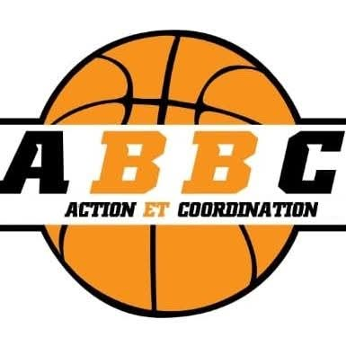
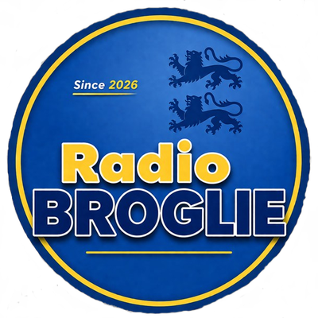

Qui sommes-nous, et comment fonctionnons-nous ?
À l'Eure Digitale est une association à but non lucratif, gérée de façon désintéressée par ses membres bénévoles. Cette page présente notre mission, nos valeurs, notre gouvernance et notre fonctionnement au quotidien.
Notre mission
Un incubateur associatif de compétences numériques et de projets collaboratifs à impact social.
Un numérique inclusif, solidaire et collaboratif
À l'Eure Digitale rassemble citoyens, associations et collectivités du département de l'Eure autour d'un objectif commun : rendre le numérique accessible à tous, tout en favorisant l'entraide, l'apprentissage par la pratique et la création de projets collectifs à impact local.
Nous fonctionnons comme un laboratoire local d'apprentissage et d'innovation, dans une logique participative et non commerciale : personne ne facture ses services, chacun contribue selon son temps et ses compétences.
- Rendre les compétences numériques accessibles à tous
- Favoriser l'autonomie digitale des citoyens
- Accompagner les structures associatives dans leurs usages numériques
- Encourager l'émergence de projets collaboratifs open source
Nos valeurs
Informations légales
Notre gouvernance
Comme toute association loi 1901, À l'Eure Digitale s'appuie sur trois instances qui garantissent son fonctionnement démocratique et sa transparence.
Assemblée Générale
Réunit chaque année tous les adhérents à jour de cotisation. Elle valide le bilan moral et financier, définit les grandes orientations et élit les membres du Conseil d'Administration. Chaque adhérent dispose d'une voix.
Conseil d'Administration
Élu par l'Assemblée Générale, il met en œuvre les décisions votées, suit l'avancement des projets (ateliers, permanences, Match'Emploi, EureTech & Inclusion…) et prépare les travaux soumis à l'AG.
Bureau
Composé d'un·e président·e, d'un·e trésorier·ère et d'un·e secrétaire (élus parmi les membres du CA), il assure la gestion quotidienne, administrative et financière de l'association entre deux réunions du CA.
Tous les postes sont bénévoles et non rémunérés (gestion désintéressée). Le rapport d'activité et les comptes de l'association sont présentés chaque année en Assemblée Générale.
Comment l'association fonctionne concrètement
Entre les Assemblées Générales, la vie de l'association repose sur l'engagement de ses membres et bénévoles.
Une organisation portée par le bénévolat
Aucun salarié : toutes les actions (ateliers, permanences, animation de la communauté, gestion administrative) sont assurées par des bénévoles, coordonnées par le Bureau et le Conseil d'Administration. Les missions sont réparties selon les domaines de compétences de chacun : développement, formation, communication, accompagnement, logistique, administration.
Organisation d'ateliers numériques et de permanences régulières dans le département
Animation d'une communauté d'entraide sur Discord, LinkedIn et Twitch
Pilotage de projets collectifs (Match'Emploi, EureTech & Inclusion) via des groupes de travail dédiés
Suivi administratif, comptable et partenarial assuré par le Bureau
Comment l'association se finance
Un modèle économique associatif, transparent et non lucratif.
Cotisations
20€/an par adhérent, réglés en ligne via HelloAsso. Elles donnent accès aux ateliers et au droit de vote en AG.
Subventions publiques
Soutiens de collectivités et dispositifs comme le FDVA pour financer des actions d'intérêt général.
Partenariats
Collaborations avec des structures locales (CCI, France Travail, Académie de Normandie…) pour des projets comme Match'Emploi.
L'association ne facture aucune prestation à ses membres au-delà de la cotisation annuelle. Les comptes sont présentés et votés chaque année en Assemblée Générale.
Nos partenaires
À l'Eure Digitale collabore avec des collectivités, institutions et structures locales pour porter ses actions sur le territoire.


Vous représentez une structure et souhaitez devenir partenaire ? Contactez-nous.
Envie de participer à la vie de l'association ?
Adhérez pour accéder aux ateliers et voter en Assemblée Générale, ou proposez votre aide bénévole selon vos disponibilités.